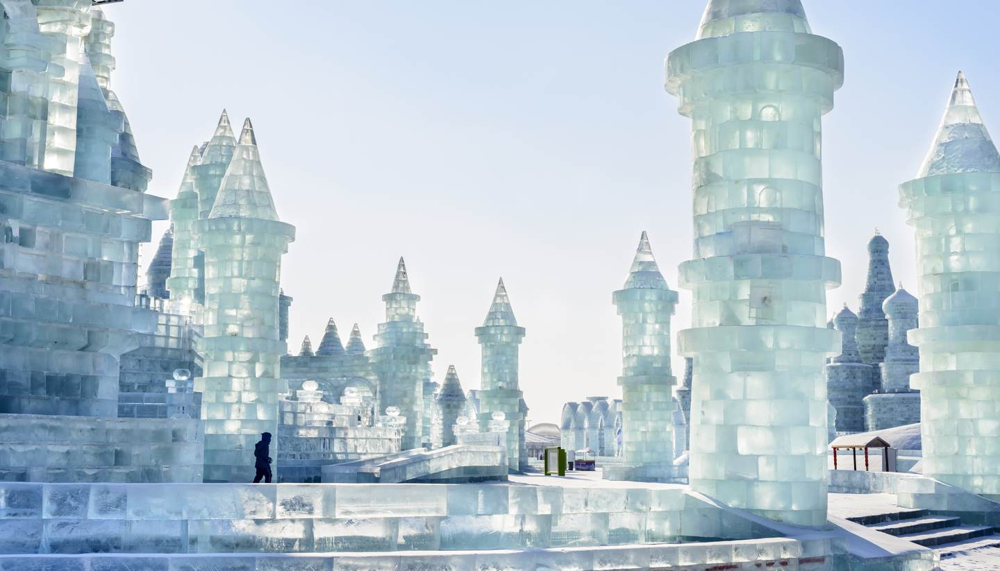
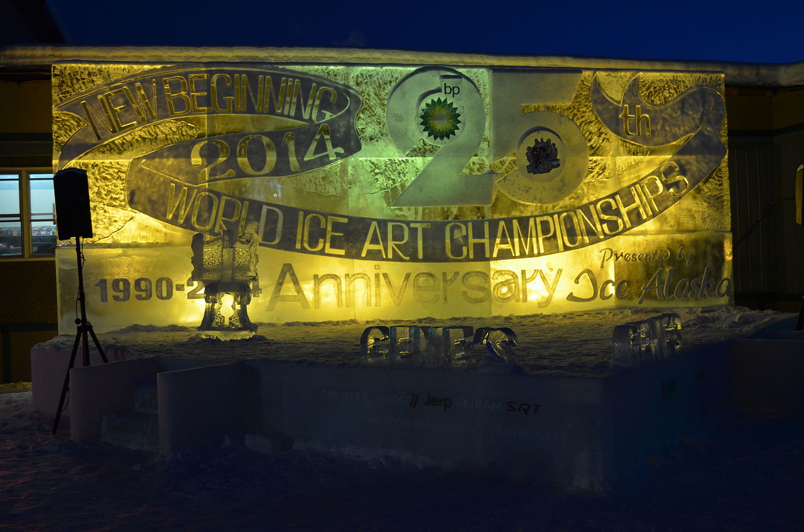
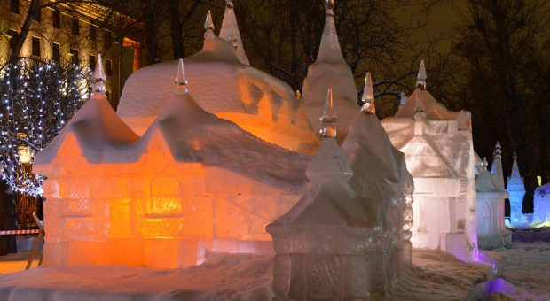
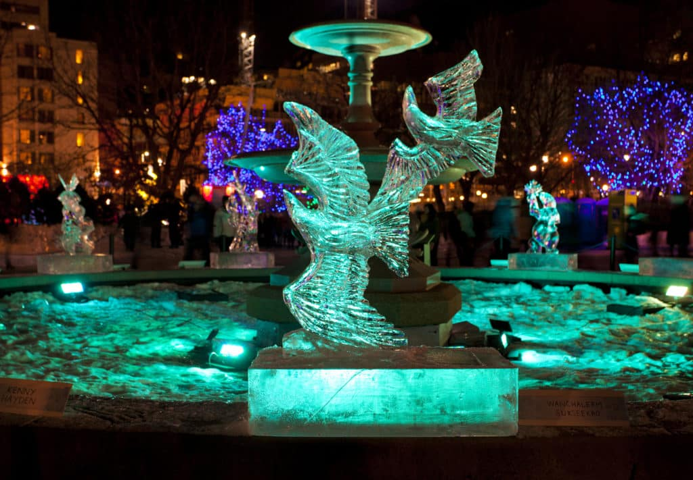

Festival de sculptures sur glace et de neige de Harbin
Le festival international de sculptures de glace et de neige est un grand évènement qui a lieu chaque année dans la ville de Harbin dans la province de Heilongjiang. Cette manifestation est la principale attraction de Harbin. Touristes du monde entier viennent admirer les magnifiques sculptures réalisées avec un soucis du détail impressionnant. Harbin a organisé le premier festival de sculptures sur glace en 1963. Cet évènement a été stoppé lors de la révolution culturelle et fut repris en 1985. Depuis, le festival a lieu chaque année du 5 janvier au 15 février.
Championnat du monde de sculpture sur glace de Fairbanks
Le World Ice Art Championships est un concours de sculpture sur glace organisé à Fairbanks par Ice Alaska, une association à but non lucratif créée en 1989. Il s'agit du plus grand concours de ce type dans le monde, auquel participent chaque année plus de 100 sculpteurs de trente pays différent. Le concours attire également des dizaines de milliers de spectateurs. En 2004, 48 000 personnes originaires de plus de 28 pays sont venu assister à la compétition.
Le festival de sculpture sur glace international de Jelgava
Le festival de la sculpture sur glace de Jelgava attire chaque année des milliers de visiteurs dans la ville pour le plus grand festival de la saison, afin de voir les œuvres de sculpteurs du monde entier réalisées à partir de 40 tonnes de glace. Les sculptures brillent sous des projecteurs colorés, le tout accompagné de concerts et de nombreuses activités pour la famille. Le festival de Jelgava vous offre le plaisir de l'hiver et la beauté de la glace.
Le Winterlude d'Ottawa
La Commission de la capitale nationale (CCN) crée le Bal de Neige (Winterlude) en 1979 pour célébrer la culture et le climat nordique uniques du Canada. Les organisateurs se sont inspirés des générations précédentes qui se rassemblaient pour se divertir en bonne compagnie durant les longs mois d'hiver. Depuis, le Bal de Neige a lieu chaque année en février à Ottawa-Gatineau. De nouvelles traditions furent crées au fil des ans comme les courses de lits et le défi des serveur(eu)s sur glace. Et aussi les Trotteurs, une course de chevaux sur la patinoire du canal Rideau qui donnait le coup d'envoi du tout premier Bal de Neige en 1979. Cette fête est aujourd'hui considéré comme l'événement phare de la saison touristique hivernale dans la région de la capitale du Canada. En moyenne, 600 000 visiteurs participent aux festivités. Année après année, les activités se déroulent bien grâce à l'aide de 800 bénévoles.